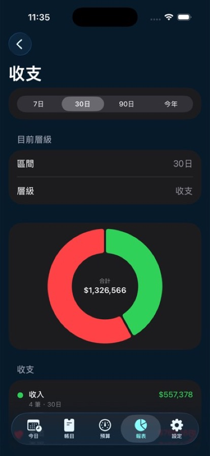

快速新增
Today 頁提供拍照記帳、照片辨識、語音記帳與手動記帳入口，常用交易可以先建立草稿，再進入確認。
產品定位
Cofec 適合需要快速留下明細、日後能對帳、能查詢、能匯出的個人使用者。它不連接銀行帳戶或信用卡 API，也不提供投資、稅務或自動理財建議。
Today 頁提供拍照記帳、照片辨識、語音記帳與手動記帳入口，常用交易可以先建立草稿，再進入確認。
照片、多張圖片、PDF / OCR 與語音可交由 AI 輔助判讀。AI 只填草稿，不會直接入帳。
支援收入、支出、退款、信用卡回饋、轉帳、投資、資產與負債記錄，並保留品項、歸屬、商家、備註與幣別。
信用卡帳目可進入對帳流程，支援帳單截圖、帳單 PDF、拍攝帳單與手動對帳，不會自動建立繳款交易。
報表可查看收支、帳戶、類目、可信度、3D 圖表與交易明細，也可匯出目前範圍或產生可保存的 AI 報告。
目前支援 Money Pro .back 匯入、Cofec 備份回復、完整 JSON 匯出，以及壓縮 SQLite 備份。
Cofec 的報表設計重點是可追溯。你可以從收支、資產負債、類目與商家一路進入單筆交易，確認每個金額為什麼被計入。

0.9.2 為 TestFlight 準備版。設定頁已提供版號與更新內容，方便測試者回報問題。
收入類目預設已整理為薪資、獎金、投資、代購、保險、拍賣、租賃。
歸屬對象、支出類目、賣場 / 地點與櫃位 / 商家預設值可由使用者刪除或新增。
設定頁已移除直接清除所有資料入口，降低誤刪風險。